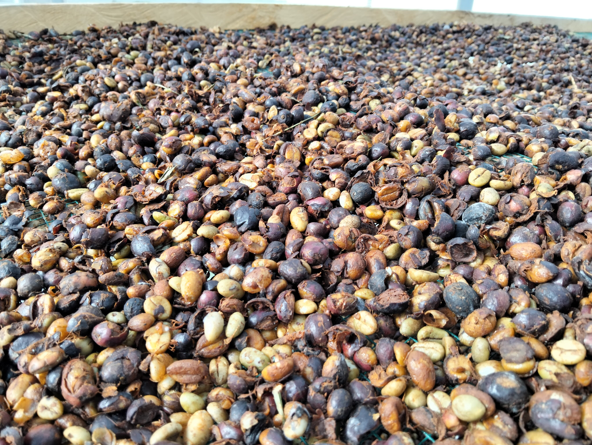
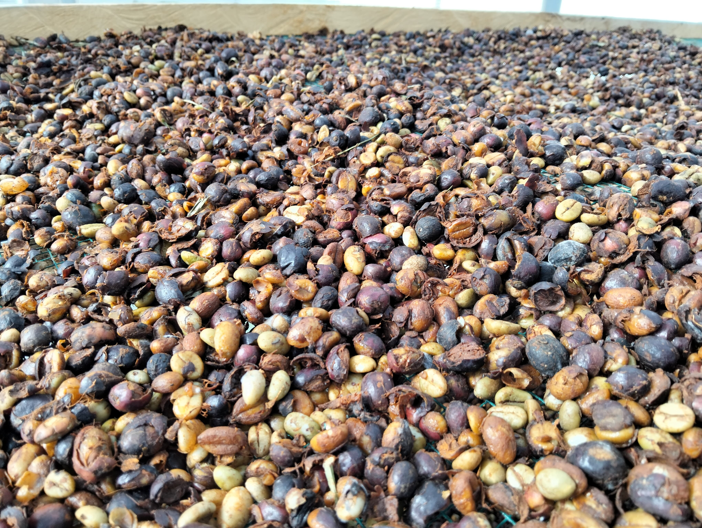

Selamat datang di sistem prediksi waktu pengeringan kopi!
 (1).jpg) 

Smart Dryer Dome Kopi adalah ruangan setengah lingkaran yang memanfaatkan energi surya dan pemanas buatan. Dengan desain ini, proses pengeringan kopi menjadi lebih cepat, efisien, dan kualitas hasil panen tetap terjaga. Sistem prediksi ini membantu Anda memperkirakan berapa lama waktu yang dibutuhkan agar kopi benar-benar kering, sesuai dengan kondisi lingkungan pada dome.
Smart Dryer Dome ini berlokasi di SMKN 1 Jarai dan umumnya digunakan untuk mengeringkan kopi robusta dengan kapasitas maksimal 50 kg per batch.
Bagaimana Sistem Smart Dryer Dome Ini Bekerja?
Panel surya menghasilkan listrik untuk menyalakan seluruh perangkat di dome, mulai dari sensor, lampu pemanas, kipas, hingga router Wi-Fi. Sensor secara otomatis membaca suhu, kelembaban, dan cahaya secara berkala.
- Data kondisi lingkungan (suhu, kelembaban, cahaya) dapat Anda lihat di web monitoring.
- Input data dari hasil monitoring tersebut ke halaman 'Cek Prediksi' di web ini.
- Sistem prediksi akan menghitung estimasi waktu pengeringan dan memberikan tips optimal.
Alur Penggunaan Sistem

Panduan Sistem Prediksi Pengeringan Kopi
Mengenal Komponen Sistem
Sistem Perangkat ⚙️
Proses pengeringan kopi dimulai di dalam dome yang sudah dilengkapi panel surya, sensor, dan pemanas otomatis. Semua alat ini bekerja secara otomatis untuk menyesuaikan kondisi di dalam dome.
Web Monitoring 📊
Anda bisa memantau suhu, kelembaban, dan kondisi dome lewat web monitoring. Cukup lihat data terbaru yang muncul di sana.
Web Prediksi ⏱️
Untuk tahu perkiraan waktu kopi akan kering, cukup salin data dari web monitoring, lalu masukkan ke web prediksi ini. Hasil prediksi akan langsung muncul, lengkap dengan tips agar proses pengeringan jadi lebih mudah.
Langkah-Langkah Mendapatkan Prediksi
-
Pantau Cek data terbaru (suhu & kelembaban) melalui Web Monitoring.
-
Input Salin data tersebut dan masukkan ke formulir pada Web Prediksi. Ingat, kapasitas maksimalnya adalah 50 kg.
-
Dapatkan Hasil Lihat estimasi waktu kopi akan kering beserta tips pengeringan optimal yang ditampilkan.
Input Data Monitoring
Pantau data dari web monitoring, lalu inputkan ke kolom yang tersedia di bawah ini.
Perkiraan Durasi Pengeringan Kopi
Perkiraan ini berdasarkan kondisi yang Anda masukkan. Hasil bisa berbeda jika terjadi perubahan cuaca atau kelembaban.
Grafik Visualisasi Prediksi
Grafik penyusutan massa akan muncul di sini setelah prediksi dibuat.
Grafik visualisasi input akan muncul di sini setelah prediksi dibuat.
Riwayat Prediksi
Panduan Kopi di Dome
Accordion Interaktif
Kondisi Ideal di Dome
- Suhu optimal: 45-50°C
- Kelembaban ideal: 20-40%
- Kapasitas kopi: Maksimal 50 kg per batch
Pengaruh Faktor Lingkungan
- Suhu rendah: Menyebabkan proses pengeringan menjadi lebih lama dan meningkatkan risiko kopi berjamur.
- Suhu tinggi: Bisa merusak biji kopi, membuat biji cepat matang tetapi mutu aroma menurun.
- Kelembaban tinggi: Menghambat penguapan air, sehingga kopi sulit kering dan bisa mudah berjamur.
- Kelembaban terlalu rendah: Terutama bila suhu juga tinggi, dapat menyebabkan biji kopi pecah.
Tips Praktis
- Jangan melebihi kapasitas maksimal 50 kg per batch.
- Ratakan kopi pada setiap tray agar panas merata ke seluruh biji.
- Pastikan sensor suhu dan kelembaban berfungsi dan bersih sebelum memulai pengeringan.
Pertanyaan Umum
Pastikan Anda sudah mendapatkan data suhu, kelembaban, dan intensitas cahaya dari sistem monitoring dome. Data tersebut menjadi input utama untuk menghasilkan prediksi waktu pengeringan kopi.
Ambil nilai suhu, kelembaban, dan cahaya terbaru dari tampilan monitoring, lalu inputkan ke kolom yang tersedia di web prediksi ini. Pastikan kapasitas kopi tidak melebihi 50 kg per batch.
Prediksi ini bermanfaat bagi petani, operator dome, atau siapa saja yang ingin mengetahui estimasi waktu kopi akan kering, sehingga proses panen dan penggunaan energi bisa lebih efisien.
Hasil prediksi mencerminkan kondisi lingkungan saat ini. Anda bisa mengurangi massa kopi, atau menyesuaikan waktu masuk kopi berikutnya berdasarkan saran yang muncul di web.
Tidak. Web prediksi hanya menghitung estimasi waktu pengeringan berdasarkan data yang Anda input. Pengaturan alat dome (lampu, kipas) sudah dikontrol otomatis oleh sistem perangkat.
Web prediksi ini didesain untuk kopi robusta yang biasa dikeringkan di dome SMKN 1 Jarai, namun bisa juga digunakan untuk jenis kopi lain dengan tetap memperhatikan parameter ideal.
Dengan web prediksi, Anda bisa merencanakan jadwal panen, meminimalkan risiko gagal kering, mengelola energi, dan mendapat wawasan baru untuk proses yang lebih baik.